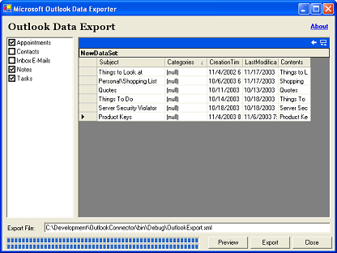

Magi .NET Connector for Microsoft Outlook |
by Magi Innovations |
The Microsoft Outlook Connector is written in C# using the .NET 1.1 Framework. It attempts to abstract the data access with Microsoft Outlook and visual components using the data.
| Version 1.0 | |
|---|---|
|  | Data from your Microsoft Outlook application can be exported to an XML file by simply checking the folder options and clicking Export. The source provides a simple example of mapping the COM object properties to a XML-friendly DataSet that could be used in any .NET application. If your system does not have Microsoft Office Outlook 2003 you may have to change the References used by the "OutlookConnector" project. The original distribution uses Microsoft Outlook 11.0 Object Library (TypeLib 9.2) which was found as "C:\Program Files\Microsoft Office\OFFICE11\MSOUTL.OLB". There shouldn't be any issues with using Microsoft Outlook 10.0 Object Library, I just don't have it installed to verify. Good luck with that. |
| Commentaries |
|---|
|
11-23-2003
04:00 CST This component for exporting Outlook objects stemmed from a couple years passively looking for a sync between my database and Outlook. I somehow stumbled on a VBA article on it (http://www.devasp.com/search/res/r9981.html) and decided to make a C# app to do the same. 11-23-2003
04:40 CST I wanted to limit this project to a single evening so it currently uses untyped DataSets. The real advantage of this application would come from using strong types and hooking in some DataAdapter(s) to really try to sync with some other system. I will probably end up tying in a MySQL data adapter in the coming weeks as time permits but if someone starts/finishes before I get to it, please! let me know. |
| Last Modified: | Author: mataylor@innovativemagi.com |